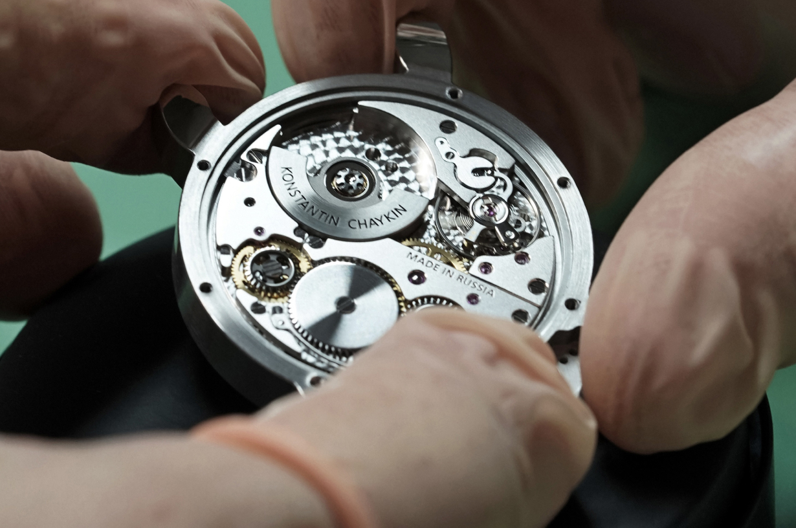

9 ферваля состоялась презентация новых часов в коллекции «Ристмоны» – «Зебра». Каждый новый ристмон привлекает внимание, потому что в новых моделях коллекции мастер реализует свои изобретения, технические разработки, а иногда мы становимся свидетелями появления не существовавших до того функций.
Для часов «Зебра» Константин Чайкин разработал новый калибр К.33.3, причем это касается как базового механизма, так и модуля джокер-индикации. Этот калибр стал первым автоматическим механизмом с мини-ротором, полностью сконструированным и произведенным в России.
Часы выполнены в единственном экземпляре по индивидуальному заказу. Заказ аналогичной модели невозможен.
Если перевернуть часы «Зебра» и посмотреть сквозь сапфировое окно задней крышки корпуса, откроется картина, не знакомая до этого дня даже экспертам. «Зебра» — первые часы не только среди ристмонов, но и в целом в коллекции бренда, в которых появляется калибр К.33.3, новый базовый автоматический механизм мануфактуры «Константин Чайкин» с мини-роторной системой автоматического завода
Часы с мини-роторными калибрами в настоящее время выпускаются исключительно часовыми брендами престижного сегмента, причем число их невелико. Константин Чайкин — один из немногих независимых часовщиков мира, предпринявших разработку механизма этой эксклюзивной категории. Более того, калибр К.33-3 — первый автоматический механизм с мини-ротором, полностью сконструированный и произведенный в России.
ЗЕБРА-ИНДИКАЦИЯ ДЛЯ НОВОГО РИСТМОНА
Две ноздри изображения зебры на циферблате часов мастер решил использовать в качестве парных окошек изобретенного им большого указателя дня недели, как он ранее сделал в модели «Минотавр» 2021 года. С единственным, но существенным отличием: названия дней недели указаны на русском языке.
Пожалуй, более заметным и более эмоционально воспринимаемым будет появление еще одного индикатора, никогда прежде не использовавшегося в коллекции «Ристмоны». Константин Чайкин создает новое улыбающееся усложнение — это указатель режима заводной головки. Когда заводная головка выдвигается, фон улыбки «Зебры» меняется с белого на красный. Эта «Зебра» умеет показывать язык!
Уникальный циферблат состоит из 40 деталей: он набран из отдельных полосок, окрашенных в белый или черный цвет. Часы «Зебра» — это первый ристмон с циферблатом такого типа, это еще одна инновация от Константина Чайкина.